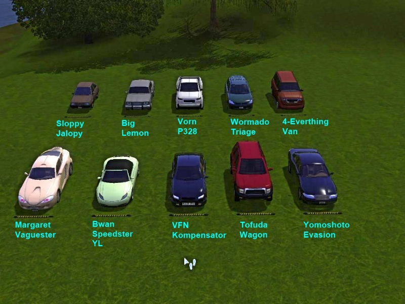

-Geneva 10/26/23
The sims3 is an open world game filled with cars, taxis, classic character dynamics, and of course nostalgia for og simmers. Sims3 nightlife includes skyscrapers, a NYC based world with clubs, celebrities, and vampires all in one pack users can get from best buy for $20.lets compare this to the sims4 version: The sims4 Cityliving gives users a city map, that is not even condensed btw, and that is all. If you wanted the the sims3 nightlife features in sims4[vamps, celebs] you would have to buy sims4 cityliving[$40], Vampires pack[$20] and get famous[$40]. That is 100$ vs $20. The create a sim in sims4 nightlife is awesome as well, not to mention the build mode which I remember fondly in nightlife. Another pack that is worth 100$ is Island paradise. In this game users get houseboats, resorts, and my favorite part: the ability to build and design your own resort. The creative capabilities in this were endless and it reminded me of a tycoon game, such as zoo tycoon. You could fire and hire workers, check your financial information, and decide even the small things like what food your buffett would serve. Sims4 took all of this out and remade it with just the map in the exxpansion Island Living. Pretty dissapointing, but this won't stop me form going back and enjoying island paradise.
-Geneva 10/26/23
I'm really hoping the game designers have too much free time and stumble upon this blog I made for class. What we've seen of the sims5 buildmode is awesome, and im really excited. Here are some random things I'd like to see again.

| Pack | Gameplay | buildmode |
|---|---|---|
| Get to work | 6/10 | 1/10 |
| Get Famous | 7/10 | 6/10 |
| Island Living | 3/10 | 7/10 |